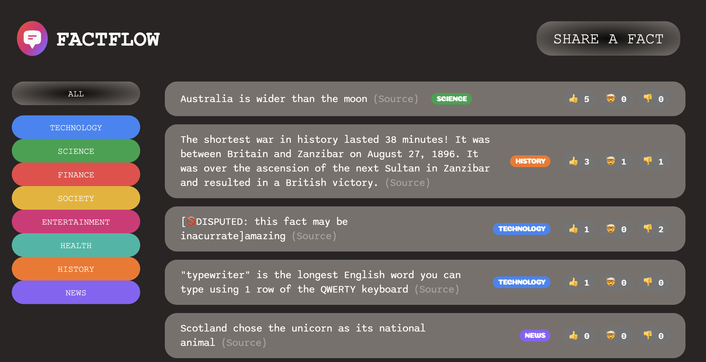
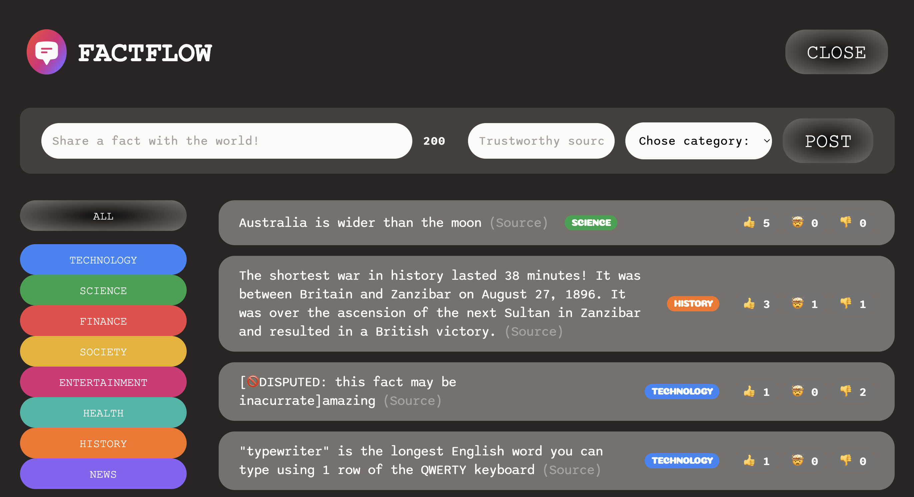
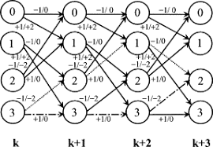
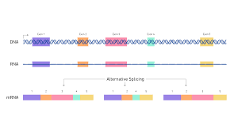

I'm a passionate software engineer who loves making products that have a positive impact on people's lives. I graduated from UC Davis in June 2023 with a bachelors degree in computer science and worked as both a research and teaching assistant during my studies. Since graduating, I have been contributing to projects ranging from full-stack mobile development to test automation and embedded software engineering. I've been fortunate to learn from talented, hard-working professors and engineers, and look forward to applying those lessons to continue making products that people can rely on.
When I'm not coding, you can find me painting, exploring new technologies, or contributing to open-source projects. I'm always eager to learn and take on new challenges that allow me to grow both personally and professionally.
Feel free to check out my GitHub profile to see some of the projects I've worked on!
During my senior year at UC Davis, I worked alongside a team of engineers from the Davis Data Science Club to create a product that could detect sign language from a user via webcam and translate what they were gesturing to english in real-time.
Our tech stack included Python, TensorFlow, and OpenCV. We overcame challenges in enhancing model training, model efficiency, achieving real-time processing, and refining user interface design. At the end of the quarter, we presented the project to the club and successfully displayed its ability to tranlsate sign language gestures in real time.
Factflow is a full-stack web application that showcases curated, user-submitted content such as fun facts, articles, and more, sourced from credible sources across various topics including technology, entertainment, and finance.
This application utilizes React, Javascript, HTML, CSS for the frontend and a PostgreSQL database for the backend. Feel free to check out the site through this link.
 PsiQuantum's mission is to build the world's first fault-tolerant, fully error-corrected quantum computer, playing a part in this goal has been an incredible opportunity. As a software engineer in the systems validation group, my work has been comprised of test automation for optical loss measurements, as well as custom driver development for test and measusment equipment in the lab, such as power meters and temperature controllers. I mainly use Python, paired with various data science and testing libraries such as Pandas, NumPy, and pyTest.
The Heart Center is a non-profit whose goal is to provide mental health resources to individuals who have been impacted by incarceration. During my time there, I helped out in the planning and early development stages of their mobile, live-streaming meditation app. Acting as co-tech lead, I would engage in weekly meetings with the CEO and technical lead to discuss sprint progress, roadmap future features, and ensure developments were aligned with the nonprofit’s mission.
As a developer, I implemented various authentication features using Flutter, Dart, and Firebase.
I worked at KorfLab under the UC Davis Genome Center as a software developer, creating a package to analyze alternative splicing in complex genomes to predict the resulting protein isoforms, providing insights regarding gene function for researchers studying disease mechanisms and biomarker discovery.
This was implemented using a modified, stochastic Viterbi algorithm, written in Python and Go. In addition, I also led the documentation of BLAST,a program for comparing primary biological sequence information, such as the amino-acid sequences of proteins or the nucleotides of DNA and/or RNA sequences
 Before moving to Davis, I spent the summer after my last quarter at De Anza working as a TA for their introduction to Python course, CIS 40. Here, I supported approximately eighty students, helping them enhance their programming skills with personalized assistance and regular support.
I also led weekly group discussions for students, focusing on key Python concepts like variables, loops, and classes, which helped them solve problems more efficiently.